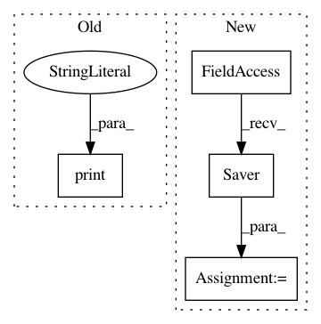

0ddd27b71f54be5682da90473d00ea671a3459ca,deeppavlov/core/models/tf_model.py,TFModel,save,#TFModel#,77
Before Change
raise ConfigError("Provided ser path doesn"t exists")
print("\n:: saving model to {} \n".format(save_path))
self._saver().save(sess=self.sess, save_path=str(save_path), global_step=0)
print("model saved")
def get_checkpoint_state(self):
if self.ser_path.is_dir():
return tf.train.get_checkpoint_state(self.ser_path)
After Change
def save(self):
save_path = str(self.save_path)
saver = tf.train.Saver()
print("Saving NerNetwork model to {}".format(save_path))
saver.save(self.sess, save_path)
def get_checkpoint_state(self):
In pattern: SUPERPATTERN
Frequency: 3
Non-data size: 4
Instances
Project Name: deepmipt/DeepPavlov
Commit Name: 0ddd27b71f54be5682da90473d00ea671a3459ca
Time: 2018-01-29
Author: arkhipov@yahoo.com
File Name: deeppavlov/core/models/tf_model.py
Class Name: TFModel
Method Name: save
Project Name: deepmipt/DeepPavlov
Commit Name: 6b33ca24d5df63dcae69f4e6140327f5fecbc897
Time: 2018-01-26
Author: ol.gure@gmail.com
File Name: deeppavlov/core/models/tf_model.py
Class Name: TFModel
Method Name: save
Project Name: Calamari-OCR/calamari
Commit Name: 2cacee3efdf68a041330d2059c7cdb41dcc7df72
Time: 2018-05-07
Author: wick.chr.info@gmail.com
File Name: calamari_ocr/ocr/backends/tensorflow_backend/tensorflow_model.py
Class Name: TensorflowModel
Method Name: load